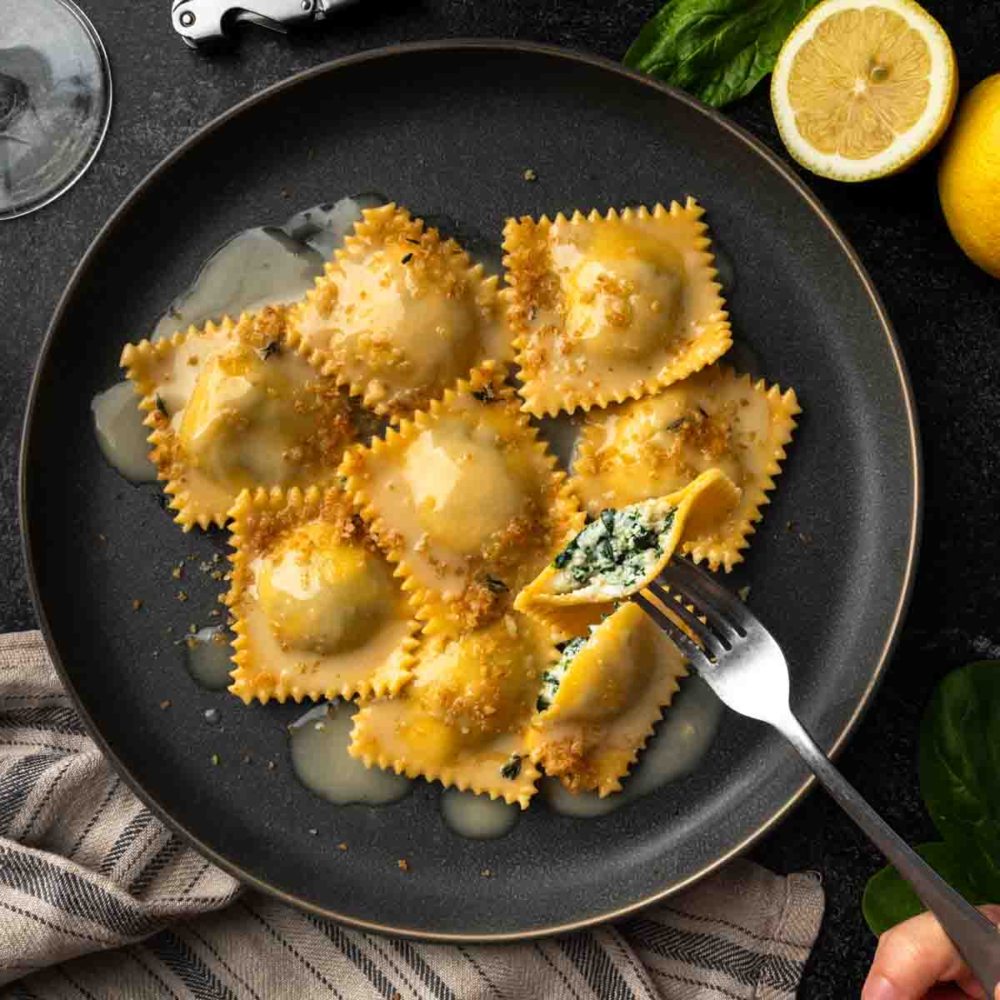

Ravioli

Descripcion Ravioli
es el nombre de un tipo de pasta rellena realizada con diferentes ingredientes y generalmente replegada en forma cuadrada, típico de la cocina italiana. Se acompañan de algún tipo de salsa, en especial de tomate (similar al ragú), tucos, pesto (salsa a base de albahaca) o crema.
INGREDIENTES
- 300 gramos harina de trigo
- 3 huevos grandes
- 500 gramos de ricota
- 200 gramos de jamón
- 70 gramos de queso duro tipo Reggiano
- Sal y pimienta
Pasos ¡A COCINAR!
- Poner la harina en la encimera limpia, formar una corona y cascar los huevos en el centro.
- Batir los huevos con un tenedor para desligarlos y así incorporar poco a poco la harina.
- Cuando los huevos estén mezclados, amasar bien durante al menos 10 minutos. La masa debe quedar lisa.
- Cubrir con papel film y dejar reposar 20 minutos.
- Mientras, picar el jamón, rallar el queso y desmigajar la ricota.
- Mezclar todo en un bol y Reservar.
Volver al inicio